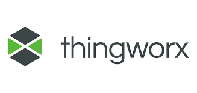
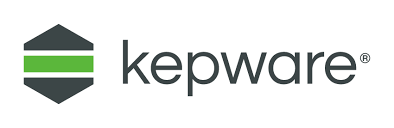
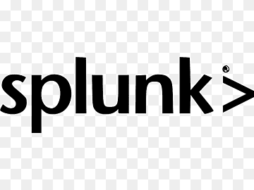

Teknoloji Altyapımız
Mevcut sistemlerinizi değiştirmeden, onları birbiriyle konuşturan güvenli bir katman kuruyoruz.
Stratejik Mesajımız
"Mevcut ERP'nizi, PLC'lerinizi veya MES sisteminizi değiştirmenize gerek yok. Biz bu sistemlerin arasına güvenli, ölçeklenebilir bir entegrasyon katmanı kuruyoruz — Sistemlerin Sistemi."
Partner Ekosistemimiz
Her platformu, işletmenizin gerçek ihtiyacına göre seçiyor ve entegre ediyoruz.
ThingWorx ve Splunk ile makinelerinizden gelen ham veriyi, yöneticilerin karar alabileceği içgörülere dönüştürüyoruz. Gerçek zamanlı izleme panelleri, alarm yönetimi ve tarihsel analiz tek bir platformda.
Cedrix, Splunk altyapısına doğrudan entegre olan, Zero Egress mimarisiyle %100 KVKK/GDPR uyumlu endüstriyel YZ asistanıdır. Tesis verilerinize doğal dilde sorular sorun, saniyeler içinde rapor ve grafik alın.
Kepware ile eski PLC'lerden yeni robotlara, SAP'ye kadar kesintisiz OT/IT entegrasyonu sağlıyoruz. 150'den fazla protokolü destekleyen Kepware, fabrikadaki her cihazın dili konuşur.
PTC Vuforia altyapısıyla sahaya AR gücü katıyoruz: görsel montaj rehberleri, uzaktan asistans (Remote Assistance) ve dijital eğitim modülleri. Ekipleriniz doğru işi ilk seferinde doğru yapıyor.
Teknoloji Partnerlerimiz
Her birinin sektördeki konumunu ve güvenilirliğini bilerek, işletmenize en uygun kombinasyonu seçiyoruz.

ThingWorx
Kepware
SplunkHarekete Geçin
Tesisinizin dijitalleşme potansiyelini keşfedin. Bilimsel metotlarla hazırlanan Sotway analizini tamamlayın ve size özel yol haritanızı hemen oluşturalım.
Analize Başla